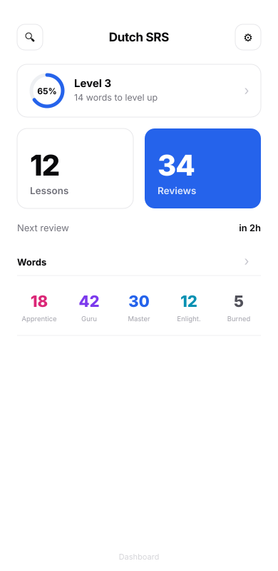
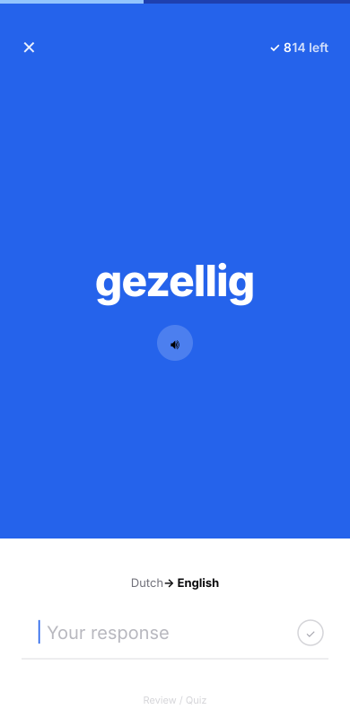
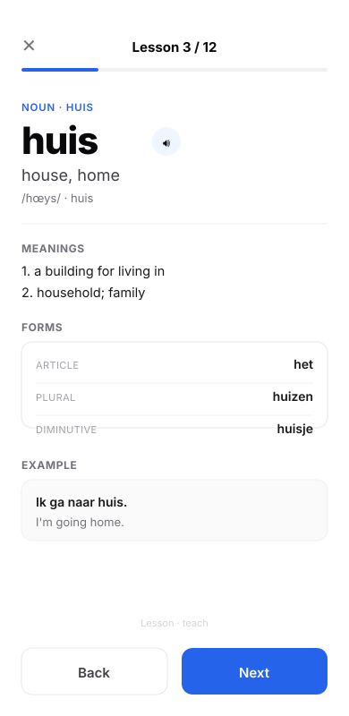
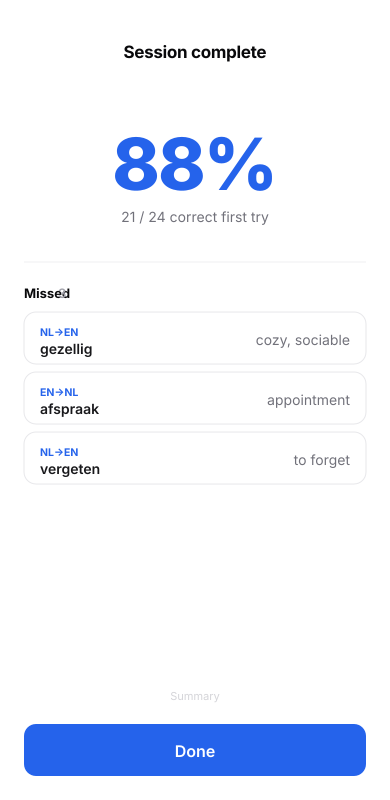
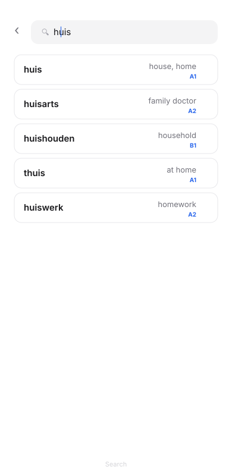
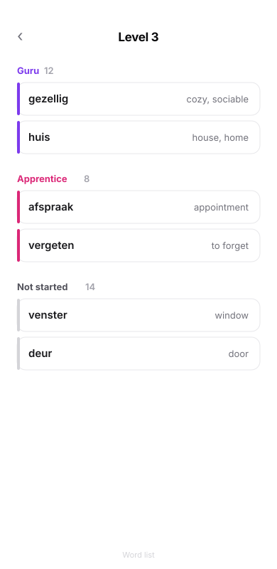
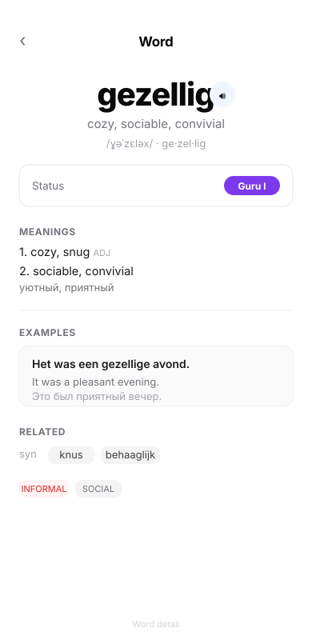

Calm minimal: white, hairline borders, no shadows, one blue accent. Quiz is Tsurukame-style — full-bleed prompt, no plate under the word, flat underline input, autofocus, no submit button.






